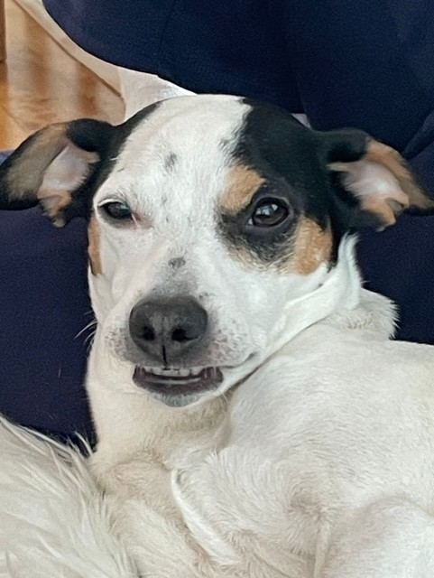

Tervetuloa Biancan ja Lumin Kotisivuille
Bianca ja Lumi ovat Pihakoiria. Jos ette vielä arvanneet niin Lumi on valkoinen ja Bianca on kauniin ruskea. Näillä nettisivuilla selviää molemmista koirista tietoja joita ette voisi arvata.

Vasemmalta oikealle Lumi ja Bianca hyväkäytöksisinä
Lumi
Lumi on 10-vuotias tyttökoira joka nauttii auringossa köllöttelystä ja salaa herkkujen syömisestä. Lumilla on myös pelonaiheita:
Pelko 1
Miehet. Lumi pelkää aluksi miehiä mutta muutaman herkun ja rapsutuksen jälkeen rakastuu.
Pelko 2
Kovat äänet. Esimerkiksi ilotulitteet!
Pelko 3
Jalkapallo. Ei tiedä onko kyse katsojan kovasta äänestä vai tutun juontajan huudosta, mutta aina juoksee peiton alle piiloon.
Näitten pelkojen lisäksi Lumilta löytyy myös kiinnostuksen aiheita. Kaikki uusi viehättää mistä kokemusta ei hirveästi vielä ole.

Kesä on Lumin parasta aikaa voi nauttia auringosta ja parhaista tuoksuista kuten ylläolevasta kuvasta voikin päätellä kun Emil siisti kanttarelleja.
Bianca

Bianca on 14-vuotias tyttökoira. Bianca ei pelkää mitään sillä valitettavasti hän ei oikein näe tai kuule enään. Sitä suuremmalla syyllä on paljon syitä miksi Bianca saa niin sanotusti diivailla!
Syy 1: Ruoka
Jos Biancaa ei ruoki lusikalla niin sitä ei kiinnosta syödä, kunnes käy selväksi että nyt ei saa lusikalla ruokaa.
Syy 2: Rapsutukset
Bianca ei siedä jos Lumia rapsutetaan mutta häntä ei. Jos koitat rapsuttaa Biancaa silti, hän lähtee pois.
Syy 3: Sade
Bianca ei ulkona kävele askeltakaan jos ulkona sataa ja se on varma!
Näistä diivailuista huolimatta Bianca pitää huolta siskostaan ja on silti erittäin läheinen varsinkin kun on koko päivä haisteltu paikkoja ja on aika käydä yöpuulle.

Kuvia Tytöistä

Tytöt päiväunilla. Bianca Lumin tyynynä

Bianca pentuna
Lumi Selfie

Lumi pentuna lenkillä

Hyvää joulua toivottaa siskokset kuin pihikset